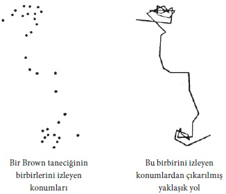

Suya en güçlü mikroskoplarla bile baksak, su moleküllerini ve hareketlerini, maddenin kinetik teorisinin bildirdiği gibi, göremeyiz. Suyun bir tanecik kümelenmesi olduğu teorisi doğruysa, taneciklerin en iyi mikroskoplarla bile görülemeyecek kadar küçük olması gerektiği sonucuna varmak zorunludur. Ama teoriye ilişmeyelim ve onun, gerçekliğin tutarlı bir yorumunu sunduğunu varsayalım. Suyun kendisini oluşturan daha küçük tanecikler, mikroskopla görülebilen Brown taneciklerini bombalamaktadır. Bombalanan tanecikler yeterince küçükse, Brown hareketi ortaya çıkmaktadır; çünkü bu bombalama her yanda bir-biçimli değildir ve düzensiz, rastgele karakteri yüzünden ortalaması alınamaz. Öyleyse, gözlenen hareket, gözlenemeyenin sonucudur. Büyük taneciklerin davranışı, moleküllerin hareketinin belirli bir biçimde yansımasıdır ve sanki, o hareketin mikroskopla görülür duruma gelecek kadar büyütülmesidir. Brown taneciklerinin izlediği yolun düzensiz ve rastgele karakteri, maddeyi oluşturan parçacıkların yollarındaki buna benzer bir düzensizliği yansıtmaktadır. Bundan ötürü Brown hareketinin nicel bir incelemesi ile, maddenin kinetik teorisinin içyüzünü daha iyi kavrayabileceğimizi anlayabiliriz. Görünür Brown hareketinin, bombalayan görünmez moleküllerin büyüklüğüne bağlı olduğu bellidir. Bombalayan moleküllerin belirli bir enerjisi olmasaydı, başka bir söyleyişle, onların kütleleri ve hızları olmasaydı, Brown hareketi olmazdı. Bundan ötürü, Brown hareketini incelemenin bir molekülün kütlesini saptamaya varabilmesi, hiç de şaşırtıcı değildir.
Yorucu teorik ve deneysel araştırma, maddenin kinetik teorisinin nicel özelliklerini aydınlatmıştır. Brown hareketi görüngüsünün bize sağladığı ipucu, nicel verilere çıkan ipuçlarından biridir. Aynı veriler, büsbütün farklı ipuçlarından yararlanılarak da elde edilebilir. Bütün yöntemlerin aynı görüşü doğrulaması çok önemlidir; çünkü bu, maddenin kinetik teorisinin iç tutarlılığını gösterir.
Burada, deneysel ve teorik çalışma ile varılan birçok nicel sonuçtan yalnız biri anılacaktır. Bütün elementlerin en hafifi olan hidrojenden bir gram aldığımızı düşünelim. Ve şöyle soralım: Bu bir gram hidrojende kaç tanecik (molekül) var? Yanıt yalnız hidrojen için değil, öbür gazların hepsi için de geçerli olacaktır; çünkü artık iki gazın hangi koşullarda aynı sayıda taneciği olduğunu biliyoruz.
Teori, suya bırakılan bir taneciğin gösterdiği Brown hareketinin belirli ölçüm sonuçlarından yararlanarak bu soruyu yanıtlamamızı sağlamaktadır. Yanıt inanılmayacak kadar büyük bir sayıdır: Üç ile başlayan yirmi dört basamaklı bir sayı! İşte bir gram hidrojendeki moleküllerin sayısı:
303.000.000.000.000.000.000.000
Bir gram hidrojendeki moleküllerin mikroskopla görülebilecek kadar büyütüldüğünü, söz gelimi Brown tanecikleri gibi onların çaplarının da milimetrenin binde beşi kadar olduğunu düşününüz. O zaman, onları tıkabasa doldurmamız için, her kenarı aşağı yukarı 400 metre olan bir kutu kullanmamız gerekirdi!
Böyle bir hidrojen molekülünün kütlesini, 1’i yukarıda verilen sayıya bölerek kolayca bulabiliriz. Sonuç aklın almayacağı kadar küçük bir sayıdır:
0,000.000.000.000.000.000.000.0033
Bu, bir hidrojen molekülünün kütlesini gram olarak gösteren sayıdır.
Brown hareketi konusundaki deneyler, fizikte çok önemli bir rol oynayan bu sayının saptanmasını sağlayan bağımsız birçok deneyden yalnızca birkaçıdır.
Maddenin kinetik teorisinde ve onun önemli bütün başarılarında gerçekleştirildiğini gördüğümüz felsefi program şudur: Bütün görüngülerin açıklanmasını, madde tanecikleri arasındaki karşılıklı etkiye indirgemek.